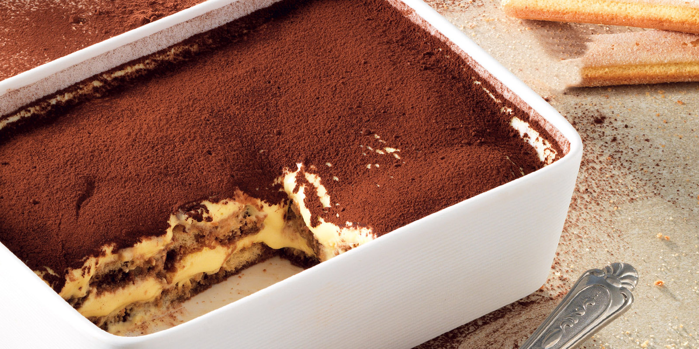

Scopri come realizzare in maniera semplice e veloce un perfetto tiramisù. Ecco la ricetta classica, con savoiardi, mascarpone e un tocco di marsala
INGREDIENTI
| Durata:1h 45min | | | | Livello:Facile | | | | Dasi:8 persone |
PREPARAZIONE
- Scopri come realizzare in maniera semplice e veloce un perfetto tiramisù, ricetta classica, con savoiardi, mascarpone e un tocco di marsala! Il tiramisù, il dolce italiano per eccellenza, durante le feste ma non solo. La ricetta originale prevede pochi ingredienti, mascarpone, uova, zucchero, savoiardi, caffè e cacao in polvere e un goccio di marsala nella crema di mascarpone e uova, riequilibrandone il gusto. Per fare un buon tiramisù partite sbattendo i tuorli con lo zucchero, fino a che non diventeranno bianchi e spumosi. Unite il Marsala, poi il mascarpone e amalgamate ottenendo una crema omogenea. Preparate i caffè e lasciateli raffreddare. Versate il caffè freddo in una larga ciotola; inzuppatevi via via i savoiardi su entrambi i lati, velocemente, per evitare che si bagnino troppo, poi adagiateli sul fondo di una pirofila rettangolare, affiancati fra loro (la nostra è 20x25 cm, h 4-5 cm). La pastorizzazine delle uova Se non siete sicuri che le uova siano freschissime procedete con la pastorizaz ione: sbattete i tuorli, zucchero e marsale e scaldate la crema a bagnomaria fino a 82°. Se non avete il termometro togliete la crema dal fuoco quando questa velerà il cucchiaio. Una volta raffreddata la crema si potrà aggiungere al mascarpone
- Ricoprite i savoiardi con uno strato di crema. Ripetete l’operazione fino a esaurimento degli ingredienti, terminando con la crema. Lasciate raffreddare in frigo per un’ora e, al momento di servire, spolverizzate la superficie con un velo uniforme di cacao setacciato.
- Se preferite, scaldate il composto di tuorli, zucchero e Marsala in una casseruola a bagnomaria e portatelo a 82 °C (temperatura di pastorizzazione), mescolando velocemente per non farlo rapprendere; una volta freddo unitevi il mascarpone. Se non avete il termometro da cucina, togliete la crema dal fuoco quando mescolandola questa velerà il cucchiaio. In questo modo eviterete i rischi associati al consumo di uova crude.
Torna all'inizio